Readable pacing
Movement and ordinary waves slow about 18%. Ground heavies gain windup and recovery; hits ease backward.
Abaqus After Hours · Native SNES · v0.24.0
Review slower combat and backward recoil together with coordinated attacks, visible contacts, connected stages, expressive jumps and dedicated super art.
Interim combined media · final technical verification pending.
All six features are combined. A full attack proof found native startup lag. Runtime optimization will change the ROM; media and all exact-ROM gates will be regenerated. This page does not declare technical readiness. PR #14 stays unmerged into main for one human playtest.
Movement and ordinary waves slow about 18%. Ground heavies gain windup and recovery; hits ease backward.
Supporting feet, hips, shoulders and guard coordinate through anticipation, contact and return.
Stable strike and body regions follow the final drawings and visible projectiles.
Whole scenery moves behind fixed slab, stone and carpet floors.
Takeoff, apex, descent and compression have distinct poses, with four adjusted arcs.
Every fighter has charge, contact/cast/peak and recovery drawings for their existing super.
Use Play.cmd or load dist/abaqus-after-hours.sfc. Choose LOCAL 1V1 / 2P for both native controller ports, or Training for repeatable spacing. Interim runtime identity and pending technical gates are at the end.
| Input | Action |
|---|---|
| Y / X | Light / strong punch |
| B / A | Light / strong kick |
| Away / Down+away | High / low guard |
| Down+X / toward+X | Uppercut / close throw |
| Down+A / Down+Y | Sweep / 32-energy special |
| Fresh neutral Y+B | 96-energy super; release directions and both buttons first |
| Start / paused Select | Pause/resume / guide pages |
Compare Damian's light and strong reactions. Hits drift away from the latched contact side and ease out; guard recoil stays smaller. Heavy attacks and ordinary specials give more time to read commitment.
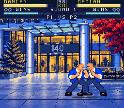
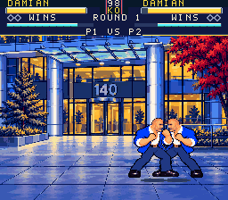
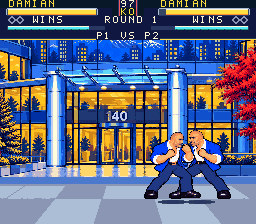
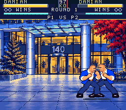
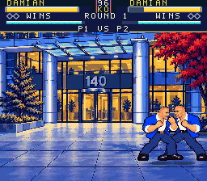
Watch Damian's planted foot and hip/shoulder rotation against his guard and striking limb. The two columns compare presentation across intentionally different gameplay timings and contact rules.
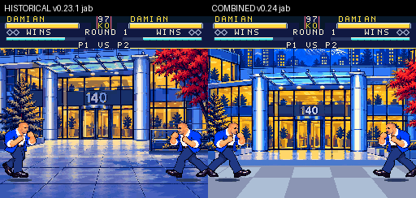
Visible fist/boot tips and projectile edges now meet stable pose-derived regions. These paired native clips use the final combined art, including rear airborne A contact.
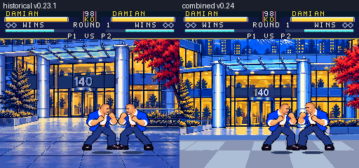
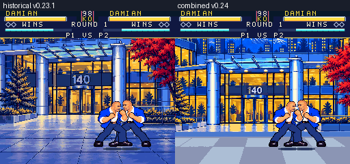
Buildings and desks move as whole scenes behind the fixed floor. Review camera limits, feet/shadows, impact shake and pause readability across all three stages.
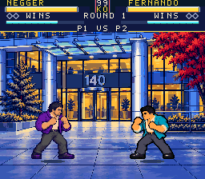
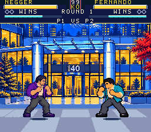
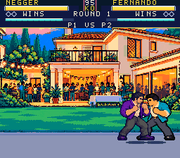
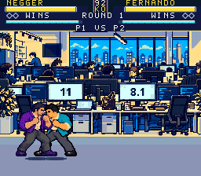
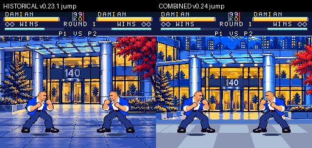
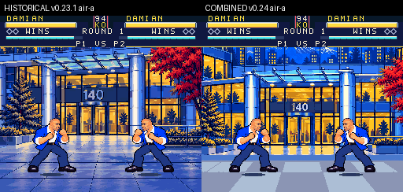
Charge, contact/cast/peak and recovery use dedicated drawings for each fighter's existing super family. Activate with a fresh neutral Y+B and all 96 energy.
Current native after clips pending. The full super run must succeed and bind its refreshed capture inventory before those clips are labeled current here. The old after GIFs remain isolated history.
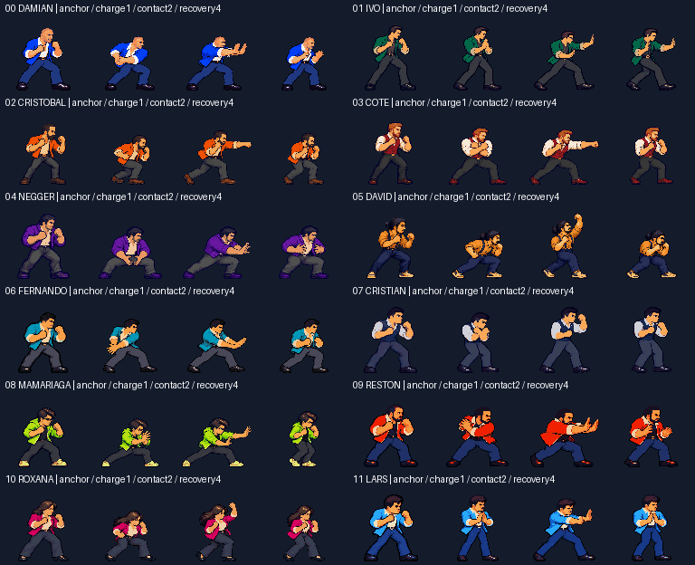
| Fighter | Combined attack loop | Final-art regions |
|---|---|---|
| 00 Damian | Provisional native pair | All64 diagnostic |
| 01 Ivo | Provisional native pair | All64 diagnostic |
| 02 Cristobal | Pending full inventory | All64 diagnostic |
| 03 Cote | Pending full inventory | All64 diagnostic |
| 04 Negger | Pending full inventory | All64 diagnostic |
| 05 David | Pending full inventory | All64 diagnostic |
| 06 Fernando | Pending full inventory | All64 diagnostic |
| 07 Cristian | Pending full inventory | All64 diagnostic |
| 08 Mamariaga | Pending full inventory | All64 diagnostic |
| 09 Reston | Pending full inventory | All64 diagnostic |
| 10 Roxana | Pending full inventory | All64 diagnostic |
| 11 Lars | Pending full inventory | All64 diagnostic |
| Version / mapping | 0.24.0 · 4 MiB NTSC FastROM LoROM · 128 banks |
|---|---|
| ROM SHA256 | 28d770aca1cc489c70d7370329e785cb223c0703d807f07d627d461ba8dbdb85 |
| Header checksum | 5872 |
| Final source/test freeze | Pending parent collation. Recent driver checkpoints are interim. |
| Preservation | 226 generated assets; all 1,318 prior RAM labels retain addresses |
| Final technical status | PENDING_FINAL_VERIFICATION · verification JSON not yet available |
Completed on this interim combined ROM: all six native suites, 29,595 checks (2,595 gameplay / 17,906 roster / 3,728 presentation / 1,443 input / 735 stages / 3,188 Training), and matching pinned Accuracy smoke. Complete focused proofs: contact 9,165 checks, 108 sessions / 61,704 callbacks; jumps 1,741 checks, all twelve / both ports; stages 735 checks, both cores.